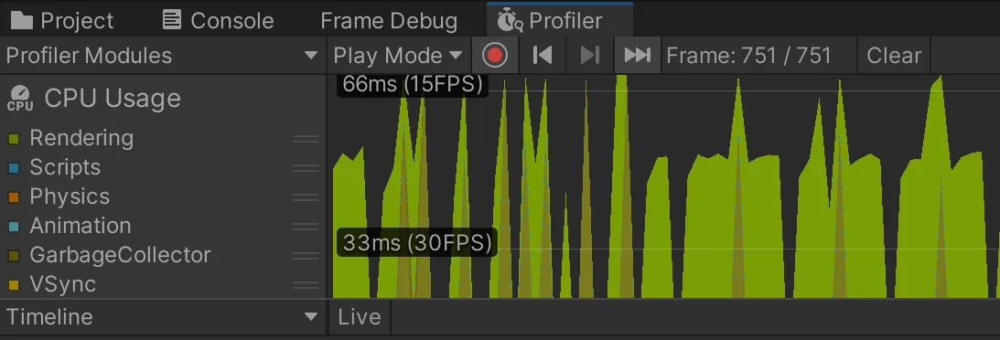
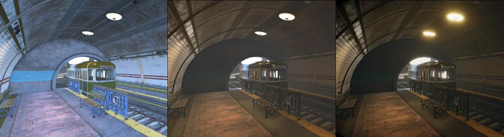
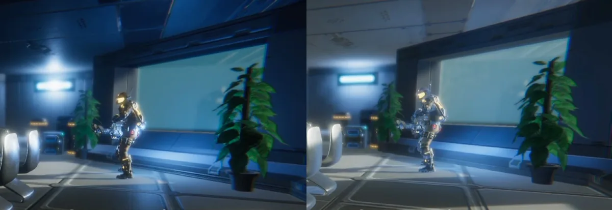
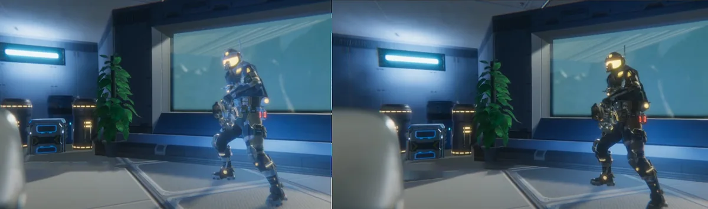
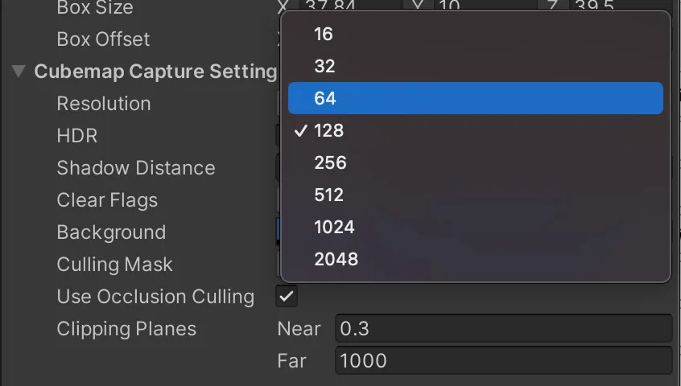
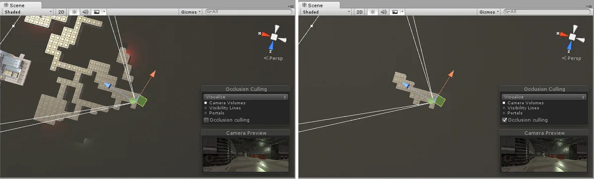
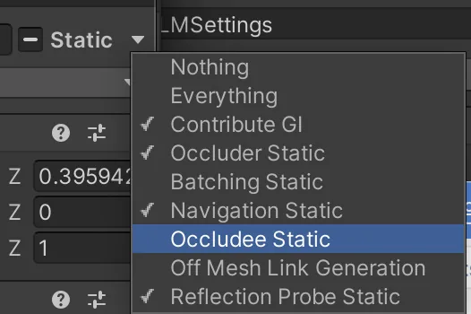
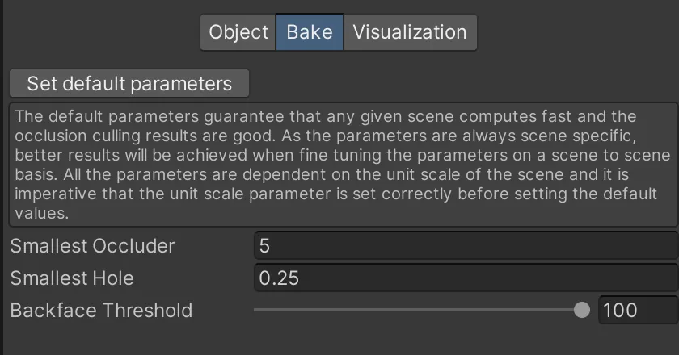
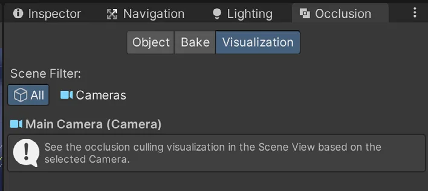
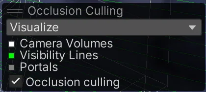

性能
性能高度取决于你正在处理的项目。请始终在整个开发周期中对游戏进行性能分析（profiling）与测试。通过 Window > Analysis > Profiler 打开 Profiler，并遵循本章中的建议。

本节介绍七种提升游戏性能的方法：
- 管理光照
- 光照探针
- 反射探针
- 摄像机设置
- 管线设置
- 帧调试器（Frame Debugger）
- Profiler
这些优化同样涵盖在本教程中。
优化 URP 中的光照与渲染
URP 在设计之初就以优化实时（real-time）光照为核心。URP 前向渲染器（Forward Renderer）支持每个对象最多 8 个实时灯光；对于桌面游戏，每个摄像机最多支持 256 个实时灯光，而移动端及其他手持平台则为每个摄像机 32 个实时灯光。URP 还允许在管线资源（Pipeline Asset）中配置逐对象光照（per-object Light）设置，以便对光照进行更精细的控制。
正如“光照”一章所述，烘焙光照（baked lighting）是提升场景性能的最佳方法之一。实时光照的开销可能很高，而烘焙光照则能帮你找回性能——前提是场景中的灯光是静态的。烘焙后的光照纹理会合批到单个绘制调用（draw call）中，无需持续计算。当场景使用多个灯光时，这一点尤其有用。烘焙光照的另一个重要理由是，它允许你在场景中渲染反弹光或间接光（indirect lighting），并提升渲染的视觉质量。
全局光照（Global Illumination）同样在“光照”小节中有所介绍。该过程模拟光线在环境中四处反弹，并用反弹的光照亮附近的其他对象。下图展示了同一场景的三种光照设置：没有烘焙光照数据、使用烘焙光照，以及应用了后处理。

烘焙之后，场景中的阴影区域会接收反弹光并被照亮。这种效果可能很细微，但该技术能让光线在场景中分布得更真实，并改善场景的整体外观。
在上图中，你可以看到烘焙后地面上的高光（specular highlights）丢失了。烘焙灯光只包含漫反射（diffuse）光照。只要有可能，就应让直接光照（direct lighting）由实时计算得出，而让全局光照来自基于图像的光照（Image Based Lighting，IBL）／阴影贴图（shadow maps）／探针（Probes）。

烘焙灯光时，请使用尽可能低的光照贴图分辨率（Lightmap Resolution）和光照贴图大小（Lightmap Size）；可通过 Window > Rendering > Lighting > Scene 打开相关设置。这有助于降低纹理内存需求。

光照探针
正如“光照”小节所述，光照探针（Light Probes）在烘焙期间采样场景中的光照数据，并让动态对象在移动或变化时能够使用反弹光信息。这有助于它们融入烘焙光照环境，显得更自然。
光照探针能为渲染增添自然感，而不会增加渲染单帧的处理时间。因此它们适用于所有硬件，甚至包括低端移动设备。

反射探针
你还可以使用反射探针（Reflection Probes）来优化场景。反射探针将环境的一部分投射到附近的几何体上，从而创建更真实的反射。默认情况下，Unity 使用天空盒（Skybox）作为反射贴图。但通过使用一个或多个反射探针，反射将更贴合周围环境。

烘焙反射探针时生成的立方体贴图（cubemap）大小，取决于摄像机与反射物体之间的接近程度。请始终使用满足需求的最小贴图尺寸，以优化场景。

摄像机设置
URP 允许你禁用摄像机上不需要的渲染流程，以优化性能。如果你的项目同时面向高端和低端设备，这会很有用。禁用开销较大的流程（例如后处理、阴影渲染或深度纹理（depth texture））会降低视觉保真度，但能提升低端设备上的性能。
遮挡剔除
优化摄像机的另一个好方法是使用遮挡剔除（occlusion culling）。默认情况下，Unity 中的摄像机会绘制视锥体（frustum）内的所有内容，包括可能被墙体或其他对象遮挡的几何体。绘制玩家看不到的几何体没有意义，而且会消耗宝贵的毫秒。这正是遮挡剔除的用武之地。
遮挡剔除最适合这样的场景：当有物体出现在其他物体与摄像机之间时，会有大量对象被遮蔽。网格状走廊迷宫类游戏是使用遮挡剔除的理想案例，如下图所示。

通过烘焙遮挡数据，Unity 会忽略场景中被阻挡的部分。减少每帧绘制的几何体能带来显著的性能提升。
要在场景中启用遮挡剔除，请将几何体标记为 Occluder Static 或 Occludee Static。遮挡物（Occluders）是中型到大型对象，可以遮挡被标记为 Occludee 的对象。要成为 Occluder，对象必须是不透明的、拥有 Terrain 或 Mesh Renderer 组件，并且在运行时不会移动。Occludee 可以是任何带有 Renderer 组件的对象，包括小型对象和透明对象，它们同样在运行时不会移动。
使用常规的下拉菜单即可设置静态属性。

打开 Window > Rendering > Occlusion Culling，然后选择 Bake 选项卡。在 Inspector 的右下角按下 Bake。Unity 会生成遮挡数据，将其作为资源保存到项目中，并将该资源链接到当前场景。
